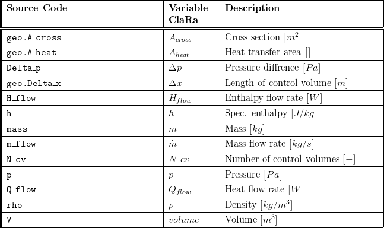
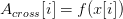
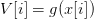
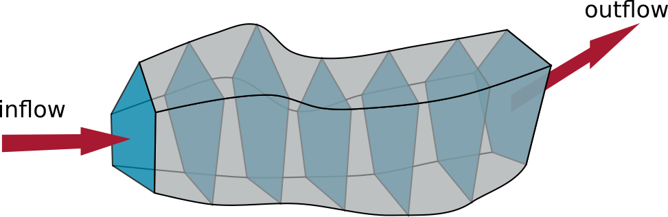
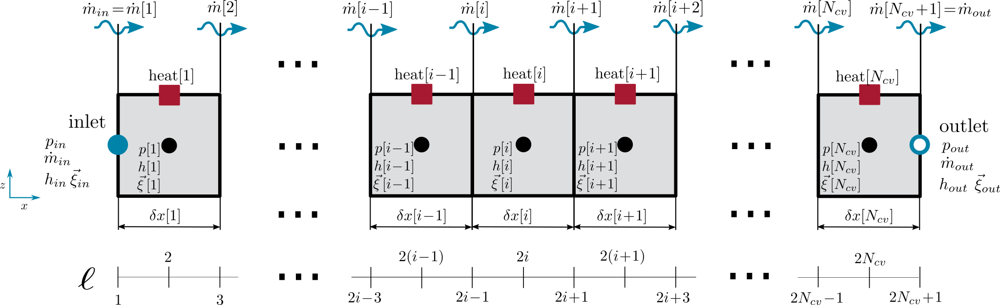
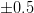
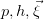
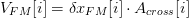
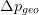
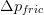

VolumeVLE_L4_advanced
Created Freitag 12 Januar 2018
Generic finite volume model with 1D discretisation in flow direction.
1. Purpose of Model
This model is applicable for modelling of pipe flow where mixture orthogonal to the flow direction and other 3D effects can be neglected. The model is generic in geometry, see Components:VolumesValvesFittings:Pipes:PipeFlow L4 Advanced for an application with a cylindrical geometry.
2. Level of Detail, Physical Effects Considered and Physical Insight
2.1 Level of Detail
Referring to Brunnemann et al. [1], this model refers to the level of detail L4 because the system is modelled with the use of balance equations, which are discretised in flow direction. The number of finite volumes N_cv can be set by the user.
2.2 Physical Effects Considered
2.3 Level of Insight
The following physical effects are considered and available at different levels of insight which are implemented as replaceable models.
Pressure Loss
Basics:ControlVolumes:Fundamentals:PressureLoss:Generic PL:NoFriction L4
Basics:ControlVolumes:Fundamentals:PressureLoss:Generic PL:LinearPressureLoss L4
Basics:ControlVolumes:Fundamentals:PressureLoss:Generic PL:QuadraticNominalPoint L4
Basics:ControlVolumes:Fundamentals:PressureLoss:VLE PL:QuadraticNominalPoint L4
Heat Transfer
Basics:ControlVolumes:Fundamentals:HeatTransport:Generic HT:IdealHeatTransfer L4
Basics:ControlVolumes:Fundamentals:HeatTransport:Generic HT:Constant L4
Basics:ControlVolumes:Fundamentals:HeatTransport:Generic HT:CharLine L4
Basics:ControlVolumes:Fundamentals:HeatTransport:VLE HT:NusseltPipe L4
3. Limits of Validity
- zero flow is not fully supported and will usually cause mass flow chattering and other numerical problems
- stratified flow patterns or other strongly inhomogeneous flow regimes (like superheated ring flow) are not considered
- no chemical reactions considered
4. Interfaces
- pressure and mass flow states at inlet/outlet connectors (if frictionAtInlet/frictionAtInlet = true)
- oscillations surpression at inlet/outlet halfcells (if frictionAtInlet/frictionAtInlet = true)
- enthalpy at inlet/outlet connectors calculated at first/last energy cell (for negative flows) or at inStream of first/last energy cell (for positive flows) or as as averaged of both previous cases (for "very small (zero)" flows)
- This allows to avoid chattering during zero flows due to avoiding usage of actualStream
5. Nomenclature
a table referencing the nomenclature in the source code, the descriptions of variables and the "human-readable" , use the following latex table template and respect the overall textwidth of 150mm:

6. Governing Equations
6.1 System Description and General Modelling Approach
The finite volume approach is applied to transform the partial differential equations defined by the balance equations for energy, mass and momentum into a set of ordinary differential equations. See Basic Concepts of Modelling:Finite Volume Approach for details of this transformation and its application to the 1D flow case. Discretisation may be non-equidistant. Mass sources and sinks are limited to the two ports, namely inlet and outlet, see figure below. The model allows for various geometries, also with variable cross section. All geometry informations are taken from a replaceable geometry model named geo where the local cross section  and the local volume  are calculated.

For the sake of simplicity, we stick to a tube like geometry.
6.2 General Model Equations
Discretisation
Then a 1-dimensional spatially discretised pipe flow can be modelled by  control volumes. The cross sectional areas are then denoted by
control volumes. The cross sectional areas are then denoted by  . Each control volume now carries a label 1,2,3,..., .
. Each control volume now carries a label 1,2,3,..., .

This leads to a the following 1-dimensional discretisation scheme, where we have introduced a labelling by  .
.

In the figure above each control volume is given similar to the 0-dimensional case.
Mass Conservation

Species Conservation

Energy Conservation


Notice that we have mass flows and state locations shifted by a half cell. This implies that we have to work effectively with a double resolution grid, as can be seen in the balance equations. Therefore we have introduced the formal  in the labelling.
When working with a double resolution grid in the Modelica code it is necessary to introduce a second label where even label energy state locations and odd label mass flow locations, as can be seen from the figure above.
This implies that  need to be interpolated at odd and mass flows / velocities need to be interpolated at even .
Momentum Conservation
The necessity of working with a double resolution grid becomes more clear, if we take a look at the momentum balance:
The momentum states are located at the mass flow locations at the border between two energy cells. Hence we need to introduce momentum control volumes that are shifted by a half cell from the energy cells. This is sometimes called a staggered grid in the literature [1,2]. The situation can be seen in the following figure, where we have introduced the flow grid and add subscripts "FM" to quantities of the flow model.


Notice that we have used the definition of the volume of a flow model cell as , so the flow cross sectional area has cancelled here.
Gravitational pressure difference  will be computed from the z-position of the flow cell boundaries. Pressure difference due to friction  has to be computed from a pressure loss model (see Basic Concepts of Modelling:Pressure Loss L4 Volumes). Pressure difference due to convection
 is computed from the momentum carried by the mass flows at the flow cell boundaries.
is computed from the momentum carried by the mass flows at the flow cell boundaries.
7. Remarks for Usage
8. Validation
9. References
[1] Johannes Brunnemann and Friedrich Gottelt, Kai Wellner, Ala Renz, André Thüring, Volker Röder, Christoph Hasenbein, Christian Schulze, Gerhard Schmitz, Jörg Eiden: "Status of ClaRaCCS: Modelling and Simulation of Coal-Fired Power Plants with CO2 capture", 9th Modelica Conference, Munich, Germany, 2012
10. Version History
- 2015 - v1.0.0 - initial implementation - J.Brunnemann, F.Gottelt, T.Tumforde, XRG Simulation GmbH
- 2016-01-29 - v1.1.0 - updated pressure loss calculation at ports - F.Gottelt, XRG Simulation GmbH
- 2017-01-15 - v1.2.0 - updated init options (Integer based) - F.Gottelt, XRG Simulation GmbH
- 2017-07-27 - v1.2.1 - removed fluid objects at flow grid (average density is now used)
improved initialisation options - T.Hoppe, XRG Simulation GmbH
Backlinks: ClaRa:Basic Concepts of Modelling:Finite Volume Approach ClaRa:A User Guide:Revisions:v1.4.1 ClaRa:Basics:ControlVolumes:FluidVolumes:VolumeVLE L4 ClaRa:Basics:ControlVolumes:GasVolumes:VolumeGas L4 Advanced